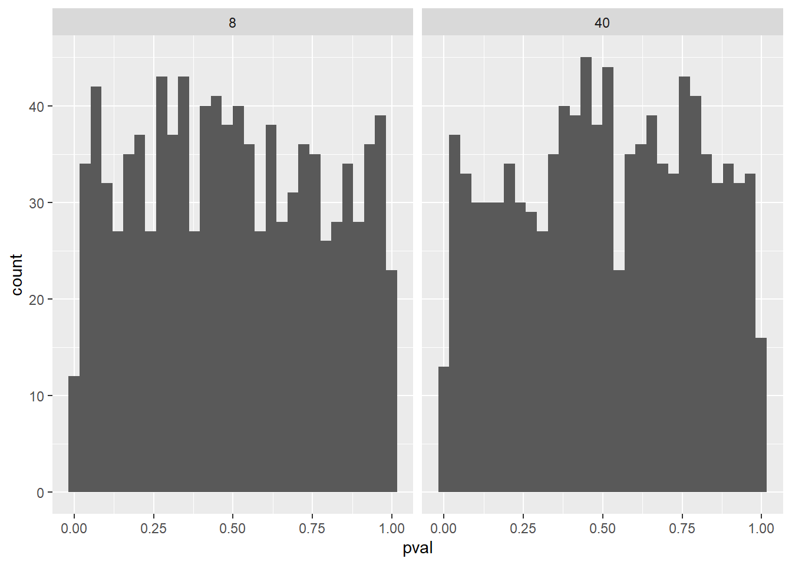

Eg fekk i oppgåve å skrive ein rapport med svar på ulike spørsmål om temaet å trekke sluttninger frå statistiske modeller, og statistisk styrke. Oppgaven skulle inneholde simuleringer med mine tolkninger og forklaringer av resultatene.
library(tidyverse)
── Attaching core tidyverse packages ──────────────────────── tidyverse 2.0.0 ──
✔ dplyr 1.1.4 ✔ readr 2.1.5
✔ forcats 1.0.0 ✔ stringr 1.5.1
✔ ggplot2 3.5.1 ✔ tibble 3.2.1
✔ lubridate 1.9.3 ✔ tidyr 1.3.1
✔ purrr 1.0.2
── Conflicts ────────────────────────────────────────── tidyverse_conflicts() ──
✖ dplyr::filter() masks stats::filter()
✖ dplyr::lag() masks stats::lag()
ℹ Use the conflicted package (<http://conflicted.r-lib.org/>) to force all conflicts to become errors
set.seed(1)population <-rnorm(1000000, mean =1.5, sd =3)samp1 <-data.frame(y =sample(population, 8, replace =FALSE))samp2 <-data.frame(y =sample(population, 40, replace =FALSE))m1 <-lm(y ~1, data = samp1)m2 <-lm(y ~1, data = samp2)summary(m1)
Call:
lm(formula = y ~ 1, data = samp1)
Residuals:
Min 1Q Median 3Q Max
-6.5322 -1.2523 -0.0883 1.3540 4.8692
Coefficients:
Estimate Std. Error t value Pr(>|t|)
(Intercept) 1.840 1.251 1.47 0.185
Residual standard error: 3.539 on 7 degrees of freedom
summary(m2)
Call:
lm(formula = y ~ 1, data = samp2)
Residuals:
Min 1Q Median 3Q Max
-5.6557 -2.2883 0.2636 2.2549 6.4212
Coefficients:
Estimate Std. Error t value Pr(>|t|)
(Intercept) 1.5642 0.4774 3.276 0.00221 **
---
Signif. codes: 0 '***' 0.001 '**' 0.01 '*' 0.05 '.' 0.1 ' ' 1
Residual standard error: 3.019 on 39 degrees of freedom
Forklar estimatet, SE, t-verdien og p-verdien fra regresjonsmodellene som vi laget tidligere
1) Frå utvalga m1 (n = 8) og m2 (n = 40) er det estimert 1,84 og 1,5642 som gjennomsnittsverdi av variabel x, SE på 1,251 og 0,4774, t-verdi på 1,47 og 3,276, p-verdi på 0,185 og 0,002. Estimatet her er en teoretisk variabel frå ein simulasjon. SE er standarderror som forteller om variasjonen frå estimatet til gjennomsnittet i populasjonen. En lav SE indikerer at det er liten variasjon og dermed mer sansynlig at estimatet er nerme populasjonsgjennomsnittet og er representativt for populasjonen. T-verdien forteller at estimatet ligger 1,47 for m1 og 3,276 for m2 standardfeil frå nullhypotesen reknet ut ifrå estimatet/SE. m2 studien sin t-verdi er høgare enn m1 studien som forteller at det er større sansynlighet for å vere statistisk signifikant. P-verdien forteller at m1 ikkje er statistisk signifikant, mens m2 er signifikant og kan dermed kaste en nullhypotese, med eit aksept om at 5% av studiene gjort på samme måte vil vere feil. P-verdiene på 0,185 og 0,002 blir berekna frå t-verdiane og forteller om kor ofte vi vil kunne sjå ein lik eller meir ekstrem t-verdi om nullhypotesen er sann. For eksempel ved 1000 repiterte studier vil 185 m1 studier og 2 m2 studier kunne få lik eller meir ekstrem t-verdi om nullhypotesen er sann.
Diskuter hva som bidrar til de ulike resultatene i de to studiene - Anntall i utvalg vil påvirke resultat….
2) De ulike resultatene i de to studiene vil vere påvirka av ulikt anntall på utvalget (n). I m1 studien vil det vere større påvirkning på verdiene ved avvik eller ekstreme verdier enn m2 studien. Statistisk styrke påvirkes av utvalgsstørrelsen der en studie med større utvalg f.eks m2 vil ha større statistisk styrke enn m1.
3) I en t-distrubusjon ønker vi å sjå på heile figuren inkludert det skraverte områdene som representerer p-verdien for å få oversikt og se etter endring. Endten det er endring i en postiv eller negativ retning så kan vi ved hjelp av det skraverte området i nedre og øvre hale av t-fordelingen undersøke…….
# Create data frames to store the model estimatesresults_8 <-data.frame(estimate =rep(NA, 1000), se =rep(NA, 1000), pval =rep(NA, 1000), n =8) results_40 <-data.frame(estimate =rep(NA, 1000), se =rep(NA, 1000), pval =rep(NA, 1000), n =40)# A for loop used to sample 1000 studies, each iteration (i) will draw a new sample# from the population. for(i in1:1000) {# Draw a sample samp1 <-data.frame(y =sample(population, 8, replace =FALSE)) samp2 <-data.frame(y =sample(population, 40, replace =FALSE))# Model the data m1 <-lm(y ~1, data = samp1) m2 <-lm(y ~1, data = samp2)# Extract values from the models results_8[i, 1] <-coef(summary(m1))[1, 1] results_8[i, 2] <-coef(summary(m1))[1, 2] results_8[i, 3] <-coef(summary(m1))[1, 4] results_40[i, 1] <-coef(summary(m2))[1, 1] results_40[i, 2] <-coef(summary(m2))[1, 2] results_40[i, 3] <-coef(summary(m2))[1, 4]}# Save the results in a combined data frameresults <-bind_rows(results_8, results_40)
Beregn standardavviket til variabelen, og gjennomsnittet av variabelen for hver av studiens utvalgsstørrelser (8 og 40). Forklar hvorfor disse tallene er veldig like. Hvordan kan du definere standardfeilen (SE) i lys av disse beregningene?estimatese
Gjennomsnitt: estimate =
results %>%ggplot(aes(pval)) +geom_histogram() +facet_wrap(~ n )
`stat_bin()` using `bins = 30`. Pick better value with `binwidth`.
Lag et histogram (se eksempelkode nedenfor) av p-verdiene fra hver studieutvalgsstørrelse. Hvordan tolker du disse histogrammene, hva forteller de deg om effekten av utvalgsstørrelse på statistisk styrke?
I histogrammenne ser vi forventa p-verdier frå studier med utvalgsstørrelse på 8 og frå studier med utvalgsstørrelse på 40. Det kjem tydelig fram at studier med utvalgsstørrelser på 8 vil ha større spreding av p-verdier samt mindre signifikante resultater enn studiene med utvalgsstørrelse på 40 som vil få stor annsamling av lav p-verdi og flere signifikante resultater. Basert på dette vil det bli gjor mer type to feil i studiene med lav utvalgsstørrelse i form av at nullhypotesen ikkje forkastes selv om den ikkje representerer populasjonen.
# A tibble: 2 × 2
n sig_results
<dbl> <int>
1 8 227
2 40 865
Beregn antall studier fra hver utvalgsstørrelse som oppgir en statistisk signifikant effekt (angi en terskel for α, ditt signifikansnivå).
Ved eit p-verdi signifikansnivå på 0,05 vil 227 av 1000 studier med utvalgsstørrelse på 8 og oppgi ein statistisk signifikant effekt. Studier med utvalgsstørrelse på 40 vil derimot ha 865 av 1000 studier som oppgir statistisk signifikant effekt.
library(pwr)pwr.t.test(n =40, sig.level =0.05, d =1.5/3, type ="one.sample")
One-sample t test power calculation
n = 40
d = 0.5
sig.level = 0.05
power = 0.8693981
alternative = two.sided
pwr.t.test(n =8, sig.level =0.05, d =1.5/3, type ="one.sample")
One-sample t test power calculation
n = 8
d = 0.5
sig.level = 0.05
power = 0.232077
alternative = two.sided
Bruk pakken til å beregne kraften til en t-test med én prøve, med en effektstørrelse på , ditt spesifiserte signifikansnivå og prøvestørrelser 8 og 40. Forklar resultatene i lys av simuleringene dine.pwr1.5/3
Frå ein one-sample t test bereknes styrken til studier med utvalgsstørrelse på 40 til å vere 0,869 ved et p-verdi signifikansnivå satt til 0,05. Om vi bytter utvalgsstørrelsen til 8 og beholder samme signifikansnivå vil styrken til studiene vere 0,232.
population <-rnorm(1000000, mean =0, sd =3)# Create data frames to store the model estimatesresults_8 <-data.frame(estimate =rep(NA, 1000), se =rep(NA, 1000), pval =rep(NA, 1000), n =8) results_40 <-data.frame(estimate =rep(NA, 1000), se =rep(NA, 1000), pval =rep(NA, 1000), n =40)# A for loop used to sample 1000 studies, each iteration (i) will draw a new sample# from the population. for(i in1:1000) {# Draw a sample samp1 <-data.frame(y =sample(population, 8, replace =FALSE)) samp2 <-data.frame(y =sample(population, 40, replace =FALSE))# Model the data m1 <-lm(y ~1, data = samp1) m2 <-lm(y ~1, data = samp2)# Extract values from the models results_8[i, 1] <-coef(summary(m1))[1, 1] results_8[i, 2] <-coef(summary(m1))[1, 2] results_8[i, 3] <-coef(summary(m1))[1, 4] results_40[i, 1] <-coef(summary(m2))[1, 1] results_40[i, 2] <-coef(summary(m2))[1, 2] results_40[i, 3] <-coef(summary(m2))[1, 4]}# Save the results in a combined data frameresults_null <-bind_rows(results_8, results_40)results_null %>%ggplot(aes(pval)) +geom_histogram() +facet_wrap(~ n )
`stat_bin()` using `bins = 30`. Pick better value with `binwidth`.

Med et signifikansnivå på 5 %, hvor mange studier ville gitt deg et “falskt positivt” resultat hvis du gjorde mange gjentatte studier?
Ved eit signifikansnivå på 5% vil 5% av gjentatte studier gi “falskt positivt” resultat.